The Three Laws
In 2010, I was at Seton Hill University, about to put an iPad in the hands of every incoming student. It was early and risky, and most of higher ed thought we were crazy. I needed to talk to someone who thought bigger than I did.
That someone was Henry King, the Man of String. Oxford-educated, deeply brilliant, one of the sharpest minds I've ever encountered on innovation and disruption. Henry didn't deal in trends; he dealt in forces. When I was Chief Digital Officer at the Institute for Transformational Learning, Henry was my expert, the person I turned to when I needed thinking that was three levels deeper than what anyone else was offering. I loved learning from him so much that I'd personally drive him to the airport just to squeeze in one more conversation. And what he shared with me has shaped how I think about technology and institutions ever since.
Henry proposed three laws of equivalence, simple in their language but devastating in their implications. And in 2026, with AI rewriting the rules of education in real time, every single one of them is landing exactly as he predicted.
The First Law
Any product or service that can be digitized, or made equivalent to another product or service, will be. And if not by you, then by someone else.
Think about what higher education actually sells. Strip away the campus tours and the school colors and the alumni networks, and what's left? Content delivery and credentialing. A professor stands in front of a room and transfers knowledge, a registrar certifies that the transfer happened, and that's the product.
Now ask Henry's question: can that be digitized? Can it be made equivalent?
It already has been. An AI tutor can deliver the same organic chemistry curriculum as a tenured professor, patiently, adaptively, at 2 AM, in any language, at any pace. The content isn't scarce anymore and hasn't been since MIT put its courseware online twenty years ago, but now the delivery has been made equivalent too. The interactive, responsive, personalized delivery that was supposed to be the thing you could only get in a classroom? AI just digitized it.
And here's the part Henry always emphasized: if not by you, then by someone else. The institutions that refuse to digitize their own value proposition aren't protecting anything; they're just creating a vacuum for someone else to fill. And that someone else doesn't have a football team to fund or a provost to appease. They move fast.
The Second Law
Any product or service that can be quantized for effective distribution will be. And if not by you, then by someone else.
Quantized. Broken into discrete, distributable units. This is the one that should keep every university president awake at night.
Higher education has always sold in bulk. You want to learn project management? That'll be a four-year degree, 120 credit hours, and $80,000, because you can't just buy the part you need. The bundle is the business model.
AI quantizes everything. Need to understand financial modeling? There's a six-week AI-powered pathway for that, and if you need to validate that you can actually do it, there's competency-based assessment powered by AI with results in hours instead of semesters. The four-year bundle isn't being disrupted by another four-year bundle; it's being quantized into exactly what the learner needs, exactly when they need it, at a fraction of the cost.
Micro-credentials, stackable certificates, skills-based hiring: these aren't trends but the Second Law in motion. The product is being quantized for effective distribution. And if the traditional institutions won't do it, the market will find someone who will.
The Third Law
Any product or service that cannot be made equivalent will most likely be made redundant by another that is, through the forces of scientific and technologic advance and/or modularization.
This is the law that has no mercy.
Some institutions will argue that what they offer can't be made equivalent. The campus experience, the mentorship, the network, the intangible magic of being in a room with other learners. And they might be right, since some of that is genuinely irreplaceable.
But Henry's Third Law doesn't say those things will be replicated. It says they'll be made redundant, not because someone builds a better version of the campus experience but because the market finds a way around it entirely. If you can't be made equivalent, you get routed around.
When an employer can validate skills through AI-powered assessment instead of checking for a degree, the diploma doesn't get digitized but bypassed. When a learner can build a verified portfolio of competencies through project-based AI learning, the transcript doesn't get quantized but becomes irrelevant. The things that can't be made equivalent don't survive because they're special; they survive only if they provide value that the equivalent alternatives genuinely can't.
And that's a much smaller list than most institutions want to believe.
And If Not by You...
The genius of Henry's framework is in that repeated refrain. And if not by you, then by someone else. It's not a threat; it's physics. These forces don't wait for consensus, don't pause for strategic planning cycles, and don't care about your accreditation timeline or your faculty senate vote.
Every product or service that can be digitized will be, every product or service that can be quantized will be, and everything that resists will be routed around by something that doesn't.
AI is the accelerant that takes Henry's laws from theoretical to inevitable, and what might have played out over decades is now playing out in semesters. The institutions that understand this, that see AI not as a threat to manage but as the force Henry described sixteen years ago, have a window to act. To digitize their own value before someone else does. To quantize their own offerings before the market does it for them. To figure out what genuinely can't be made equivalent and double down on that, hard.
The laws don't change. The timeline just did.
Henry taught me that in 2010, and I've been watching it come true ever since. Right now, in this moment, the proof is everywhere.
Read Henry's original 2010 piece: Why Is Digital Technology Still So Disruptive? And while you're there, check out his art, because the man thinks in more dimensions than most of us can see.
Ready to apply the three laws? Let's talk or join the conversation in Discord.